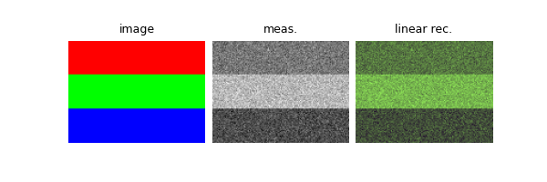

Note
Go to the end to download the full example code
Creating a forward operator.
While deepinv offers a large number of forward operators in the physics module, you might want to create your own forward operator for your specific imaging problem. This example walks you through the creation of a custom forward operator.
We will create a simple forward operator that converts RGB images to grayscale images by averaging the color channels. We also show you how to exploit the singular value decomposition of the operator to speed up the evaluation of the pseudo-inverse and proximal operators.
import deepinv as dinv
import torch
Creating a custom forward operator.
Defining a new linear operator only requires a forward function and its transpose operation,
inheriting the remaining structure of the deepinv.physics.LinearPhysics class.
Once the operator is defined, we can use any of the functions in the deepinv.physics.Physics class and
deepinv.physics.LinearPhysics class, such as computing the norm of the operator, testing the adjointness,
computing the proximal operator, etc.
# define an operator that converts color images into grayscale ones.
class Decolorize(dinv.physics.LinearPhysics):
r"""
Converts RGB images to grayscale.
Signals must be tensors with 3 colour (RGB) channels, i.e. [*,3,*,*]
The measurements are grayscale images.
"""
def __init__(self, **kwargs):
super().__init__(**kwargs)
self.noise_model = dinv.physics.GaussianNoise(sigma=0.1)
def A(self, x):
y = x[:, 0, :, :] * 0.2989 + x[:, 1, :, :] * 0.5870 + x[:, 2, :, :] * 0.1140
return y.unsqueeze(1)
def A_adjoint(self, y):
return torch.cat([y * 0.2989, y * 0.5870, y * 0.1140], dim=1)
physics = Decolorize()
Generate toy image
This example uses a toy image with 3 color channels.
Verifying our linear operator
If the operator is linear, it is recommended to verify that the transpose well-defined using
deepinv.physics.LinearPhysics.adjointness_test(), and that it has a unit norm usingdeepinv.physics.LinearPhysics.compute_norm().
Power iteration converged at iteration 2, value=0.45
The linear operator has norm=0.45
The linear operator has a well defined transpose
Creating a decomposable forward operator.
If the forward operator has a closed form singular value decomposition (SVD),
it is recommended to implement the operator using the deepinv.physics.DecomposablePhysics() method.
The operator in this example is decomposable, so we can implement it using
deepinv.physics.DecomposablePhysics.
class DecolorizeSVD(dinv.physics.DecomposablePhysics):
r"""
Converts RGB images to grayscale.
Signals must be tensors with 3 colour (RGB) channels, i.e. [*,3,*,*]
The measurements are grayscale images.
"""
def __init__(self, **kwargs):
super().__init__(**kwargs)
self.mask = 0.447
self.noise_model = dinv.physics.GaussianNoise(sigma=0.1)
def V_adjoint(self, x):
y = x[:, 0, :, :] * 0.6687 + x[:, 1, :, :] * 1.3132 + x[:, 2, :, :] * 0.2550
return y.unsqueeze(1)
def V(self, y):
return torch.cat([y * 0.6687, y * 1.3132, y * 0.2550], dim=1)
physics2 = DecolorizeSVD()
y2 = physics2(x)
xlin2 = physics.A_dagger(y2) # compute the linear pseudo-inverse
dinv.utils.plot([x, y2, xlin2], titles=["image", "meas.", "linear rec."])
print(f"The decomposable operator has norm={physics.compute_norm(x):.2f}")
if physics.adjointness_test(x) < 1e-5:
print("The decomposable operator has a well defined transpose")
Power iteration converged at iteration 2, value=0.45
The decomposable operator has norm=0.45
The decomposable operator has a well defined transpose
Benefits of using a decomposable forward operator.
If the forward operator has a closed form singular value decomposition (SVD),
it is recommended to implement the operator using deepinv.physics.DecomposablePhysics.
The operator in this example is decomposable, so we can implement it using
deepinv.physics.DecomposablePhysics.
The main benefit of using a decomposable forward operator is that it provides closed form solutions for the
proximal operator and the linear pseudo-inverse. Moreover, some algorithms, such as deepinv.sampling.DDRM
require the forward operator to be decomposable.
import time
start = time.time()
for i in range(10):
xlin = physics.A_dagger(x)
xprox = physics.prox_l2(x, y, 0.1)
end = time.time()
print(f"Elapsed time for LinearPhysics: {end - start:.2f} seconds")
start = time.time()
for i in range(10):
xlin2 = physics2.A_dagger(x)
xprox2 = physics2.prox_l2(x, y2, 0.1)
end = time.time()
print(f"Elapsed time for DecomposablePhysics: {end - start:.2e} seconds")
Elapsed time for LinearPhysics: 0.21 seconds
Elapsed time for DecomposablePhysics: 3.74e-03 seconds
Total running time of the script: (0 minutes 0.450 seconds)